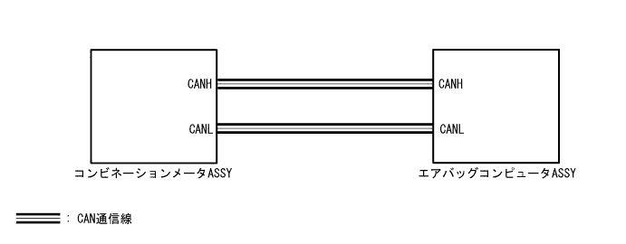

SRS Airbag System Warning Light Remains On |

| Step 1 | Inspect CAN Communication System |
Using SST (TaSCAN), check the DTCs and confirm that there is no malfunction in the CAN communication system. (see)
|
| ||||
| OK | |
| Step 2 | Inspect Connector Connection Condition |
Disconnect the battery negative terminal and wait for 90 seconds.
Check the connection condition of the connectors connected to the airbag computer assembly.
|
| ||||
| OK | |
| Step 3 | Perform TaSCAN Active Test |
Connect the cable to the negative (-) battery terminal and turn the ignition switch ON.
Using SST (TaSCAN), perform the Active Test of the combination meter computer.
| Item Name | Item Description | Inspection Item | Reference Value |
|---|---|---|---|
| TelltaleNo.1 | Meter Indicator Display | AIR BAG | 1Hz blinking/off |
|
| ||||
| OK | ||
| ||